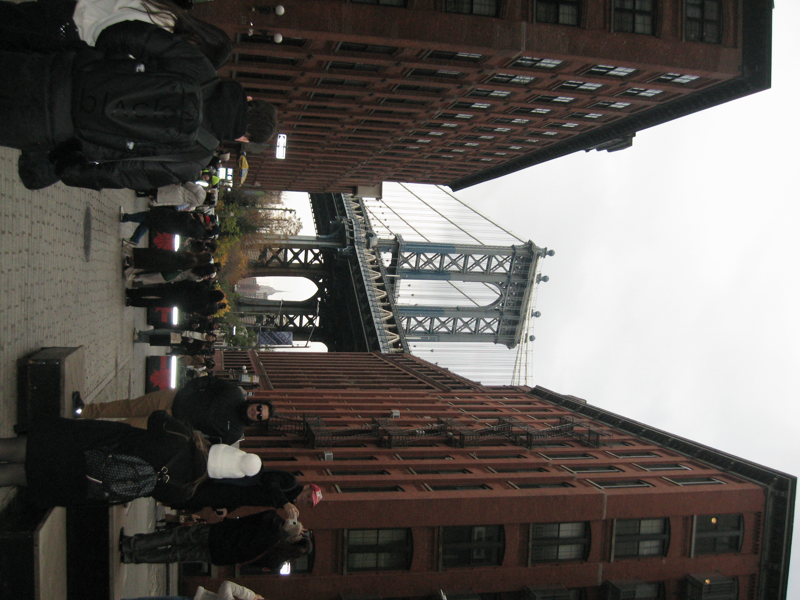
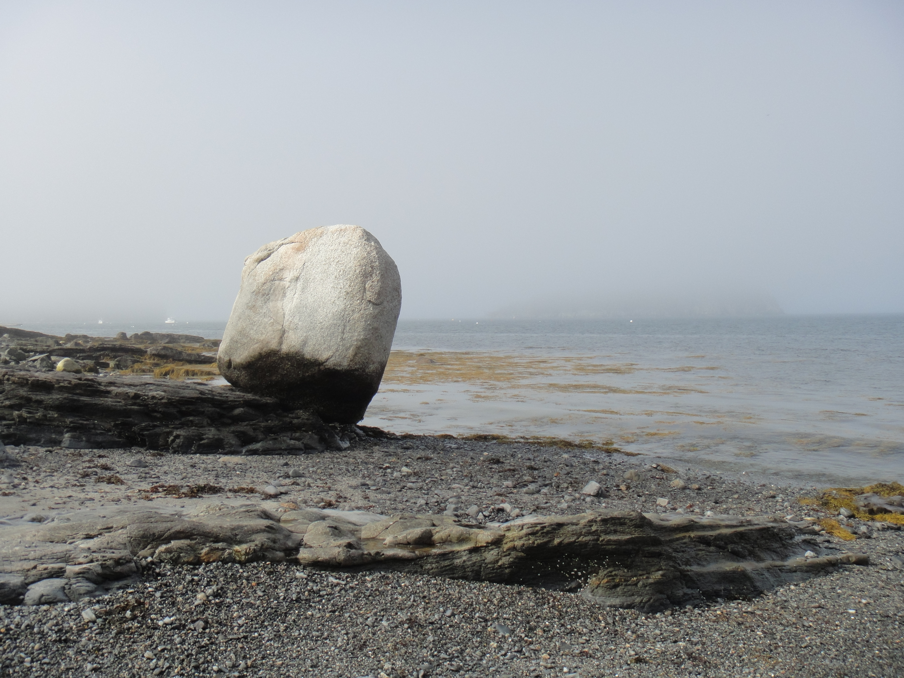
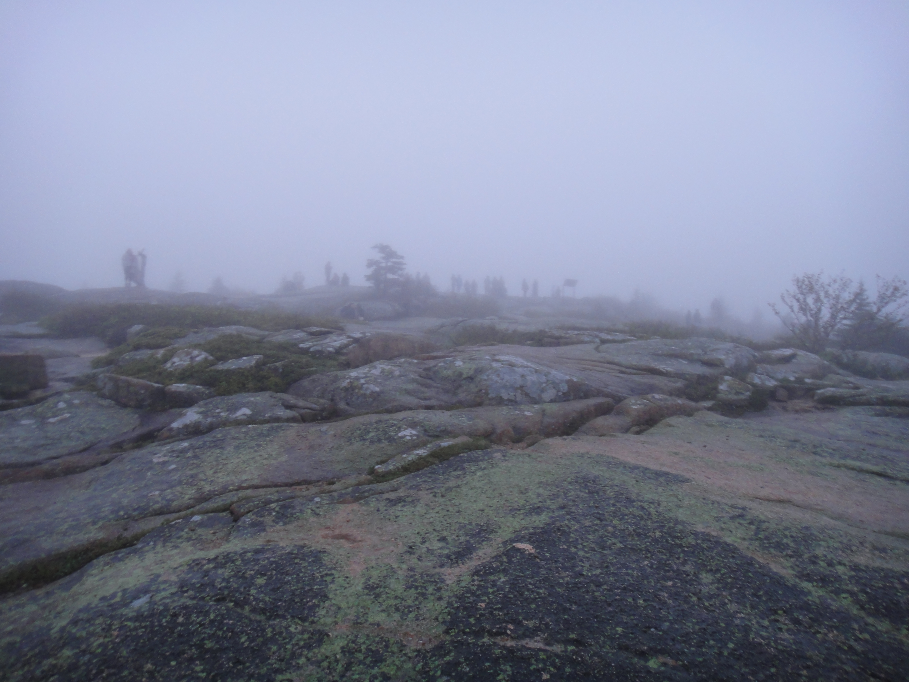
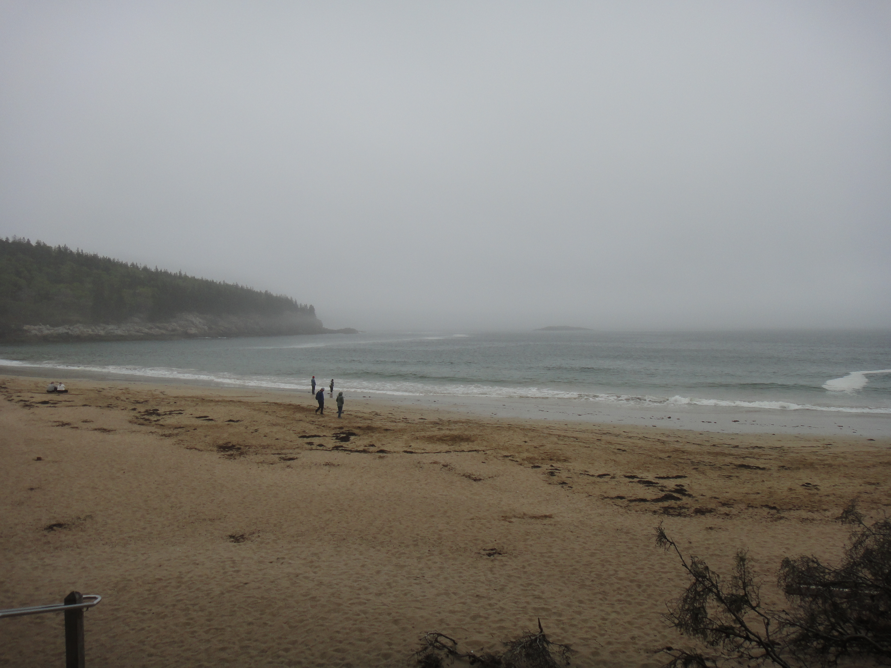

I drove up the East Coast with my best friend, just the two of us and an open road. The trip took us through four cities that each left a mark in completely different ways.
Boston was the first stop, and the first photograph tells you everything about how it felt: enormous. I pointed the camera up at the Paramount Theatre sign and tried to capture the feeling of a city that simply would not stop. The neon, the noise, the scale of it pressed against a sky that seemed too small to contain it all. I had spent most of my life in cities across Asia, but Boston had a weight to it that surprised me.
New York came next. We went to DUMBO in Brooklyn and stood in that famous corridor where Washington Street frames the Manhattan Bridge perfectly, surrounded by what felt like a hundred other people doing the exact same thing. There is something funny about a photograph of a crowd all taking the same photograph, everyone trying to claim a moment that belongs equally to everyone. I took mine anyway.
Then came Acadia National Park, my favorite stop of the whole trip. We woke up at 4 AM and drove to Cadillac Mountain because we had read it was the first place in the continental U.S. to catch sunlight. We climbed in the dark, half asleep, talking about all the light we were about to see. What we got was fog. A thick, grey, beautiful fog that swallowed everything and gave nothing back. No sunrise. No blazing light on the Atlantic. Just a twilight abyss and the sound of waves somewhere below us.
I have thought about that morning a lot since. Beauty doesn't always arrive the way you invited it. Sometimes it shows up as a fog so total you can hear yourself breathing, a lone white boulder on a grey shoreline, a seagull standing in shallow water like it has nowhere better to be. Those three Acadia photographs are some of the best I have ever taken, and none of them have any light in them at all.
We made it up at Niagara Falls, where we shared a rack of lamb ribs that cost more than anything I had ever ordered in my life. Worth every cent. The falls were overwhelming in the best way. Mist everywhere. Tourist boats in red ponchos. The river churning turquoise. The kind of thing you cannot fully believe even when you are standing in front of it.






"Beauty doesn't always arrive the way you invited it. Sometimes it's a fog so thick you can hear yourself breathing."Cadillac Mountain, Acadia National Park